Proposal of StarOffice Toolbar & Menu redesign.
Christian Jansen
OpenOffice.org
Table of Content
Toolbars Elements
Dock / Undock functionality
Undocked Toolbars
Customizing Toolbars
General
Cultural Impact
Icon Size
Icon Feedback
General Toolbar Icons
16 Color Toolbar Icons
256 Color Toolbar Icons
32 bit Toolbar Icons
Menu Titles
Menu Parts
Item Groups in Menues
Introduction
This proposal describes a possible user interface redesign for OpenOffice.org / StarOffice 6.X and above. The following enumeration lists the proposed items:
-
Menus
-
Toolbars
-
Icons
All of the proposed topics have to be get more in detail, but this document is more like a first step how we could move on. This proposal has to be completed by an accessibility and controls chapter to each topic.The screen shot will replace by English ones, but I think it is not so important for understanding the context.
Toolbars
The intended purpose of toolbars is that they provide a strong visual access to items like things on a desk.The toolbars should provide a easy to use and self explaining user interface and item.Toolbar items are accessible via mouse, in addition they should provide access via keyboard shortcuts.Toolbar items must always provide a ToolTip. Toolbars should provide a flexible and configurable or customizable interface. If this is given the user could create his own world to solve his tasks.
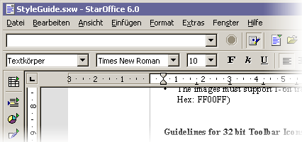
Figure 1 StarOffice 6.0 Toolbars
Toolbars Elements
Each toolbar includes a
grip handle to arrange the toolbar. A toolbar could contain the following items
listed below (Figure 2).
-
Icons
-
Text
-
Icons & Text combinations
-
Icons with drop down function
-
Buttons
-
Controls like Combo Boxes
-
Grip Handles
-
Separators
-
Drop downs for toolbar configuration
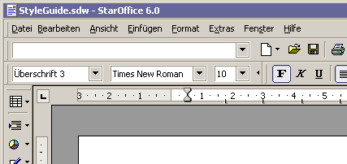
Figure 2 Toolsbars with toolbar grip handle
Dock / Undock Functionality
To enable an easy to use undock functionality for toolbars, a toolbar grip handle on the left end of the toolbar. If the use wants to move the toolbar he could drag it easily by pressing the left mouse button and drag over the grip handle of the toolbar.
If the new location is within
the hot zone of an other toolbar edge, the toolbar should be docked at the edge
when the user releases the mouse button. Otherwise if the new location is not
within the hot zone of a edge the toolbar should be displayed as palette window.
While moving the toolbar a visual feedback should be given (Figure 3). If the
user moves the toolbar into a hot zone of a docking location only the outline
of the bar should be visualized. While moving over non docking are like the
document area for example change the outline into a bolder dotted line to visualize
a modification.
Providing support for toolbar location change makes it necessary to preserve the current position and size.
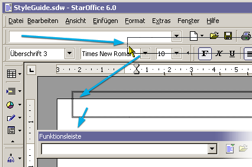
Figure 3 Toolbar move by a pointer
Undocked Toolbars
Undocked toolbars are needed to provide context sensitive tools.E.G: The user inserts a picture into a text document. After inserting the picture an undocked toolbar appears with an optimal set of items (Figure 4 & 5).
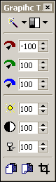
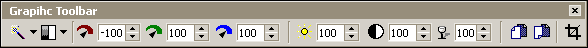
Figure 4 & 5 Same toolbar vertical and horizontal
Customizing Toolbars
A toolbar band (Figure 5)could be collapsed or expanded by clicking with the mouse pointer on the triangle located on the right end of the toolbar group. Clicking on the triangle provides a collapse of the toolbar group by one group of items (a group is defined by items between two separators).
Figure 5 A toolbar band with three toolbar groups.
After a part of the toolbar is hidden the separators between two groups changes to a control which enables the user to collapse the left group or expand the currently hidden group (Figure 6).
Figure 6 Toolbar with a hidden group.
To expand or collapse groups it is even possible to go via context menu provided by the toolbar bands. This menu is stays visible the hole time of editing the state of the items. The menu will be closed after clicking out side the menu location.
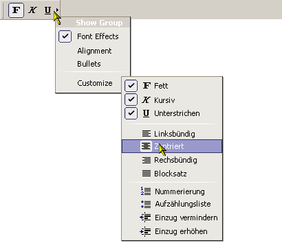
Figure 7 Toolbar with context menu
Toolbar Icons
General
Icons should provide people easily access to items. Like tools on a desk, for example pens, rules a rubber gum and so on. One of the most important things is consistency in design of these images. They should be in scale, orientation and color consistent. The icons must fit homogeny into its environment.
Each icon should be easily and quickly distinguishable from the other item in the toolbar.
In addition they have to provide a sufficient contrast in the image to ensure that different parts could easily identify the elements. In this context icons should not match in similarity with common controls.
Cultural Impact
Cultural impacts should always considered in icon design. Critical icons should reviewed as early as possible in the development cycle of StarOffice. The problem is that metaphors, symbols or simple image may not have the same meaning around the world. Also the use of letters and words should be avoid whenever possible.
Icon Size
Currently StarOffice uses the size 16 pixels by 15 pixels (width by height) and 26 px by 25 px, for the large ones. These formats should changed to a new format. I would recommend 16 by 16 for the small ones and 32 by 32 for the large. The the large ones should provide a transparent border, with a minimum of 3 pixels to each side.
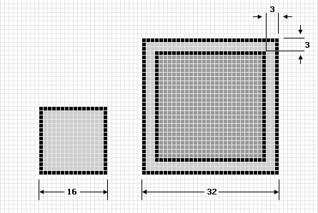
Figure 8 StarOffice icon size
Icon Feedback
Currently the enabled items in the toolbars are sometimes hard to identify (Figure 9). A flat rectangular in prominent color and a filled area (same color like the border only with 90% transparency) helps a lot to identify the enabled items (Figure 11). To support a better tracking feedback when the mouse pointer is over the toolbar item a highlight area with a border and a drop shadow for the image. Provides a great feedback. Compare Figure 10 & 12 for this. In addition the hot (mouse over) state should have a slightly increased saturation.
| 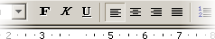 | 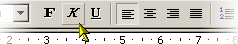 |
| Figure 9 StarOffice 6.0 Toolbar with a enabled item. | Figure 10 StarOffice 6.0 Toolbar with hot (mouse over) item. |
| 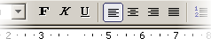 | 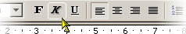 |
| Figure 11 Proposal of an enabled toolbar item. | Figure 12 Proposal of a new mouse over feedback. |
Common Toolbar Buttons
Consistent use of common tool images allows the user a better transfer of learning and skills from product to product. These images may only be used like in the table below.
General Toolbar Icons
-
Use as many common toolbar images as possible
-
Use the same hue and color saturation.
16 Color Toolbar Icons
-
The Windows 16 color palette must be used .
-
The images shell flat in appearance may be with little dimension or shading.
-
The images must support 1-bit transparency. The recommended color is Magenta (R: 255 G:0 B: 255, Hex: FF00FF)
256 Color Toolbar Icons
-
The Windows halftone palette must be used.
-
Image should be more dimensional. The light source should be placed in the upper left. Shade if needed and/or appropriate.
-
The images must support 1-bit transparency. The recommended color is Magenta (R: 255 G:0 B: 255, Hex: FF00FF)
32 Bit Toolbar Icons
-
The images are 24bit in color depth with an 8bit alpha channel. This allows images with smoothed edges which could blend to every kind of background. (BMP/DIB and 24-bit with Alpha or PNG )
-
Image should be more dimensional. The light source should be placed in the upper left. Shade if needed and/or appropriate.
Menues
Menus are lists of items, commands, attributes or states from which the user could choose from. Menus are based on the interface principle of “see and point”. The most important advantage of menus is that: People do not have to remember command or visual items, because they could choose from a list of available option at any time they want.
Menu Titles
Menu titles should be one word that describes easily the expected items.
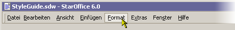
Figure 13 The menu bar
Menu Parts
The parts of a menu are a title, items, separators, submenu indicators, keyboard accelerators and if needed a icon in front of the item.
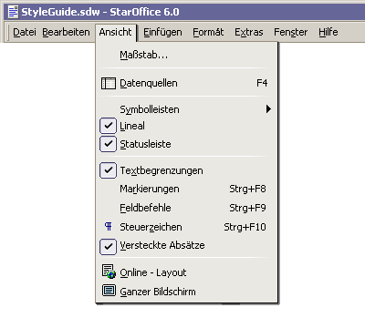
Item Groups in Menues
On of the most important aspect of adding items into menus is to group the items logically.In general the most important or frequently used item should be the first item of a group or the menu.How many separators are used in a menu is a aesthetic and only partly a usability decision.But in general too many separators are confusing and make reading more difficult.
Possible StarOffice / OpenOffice redesign
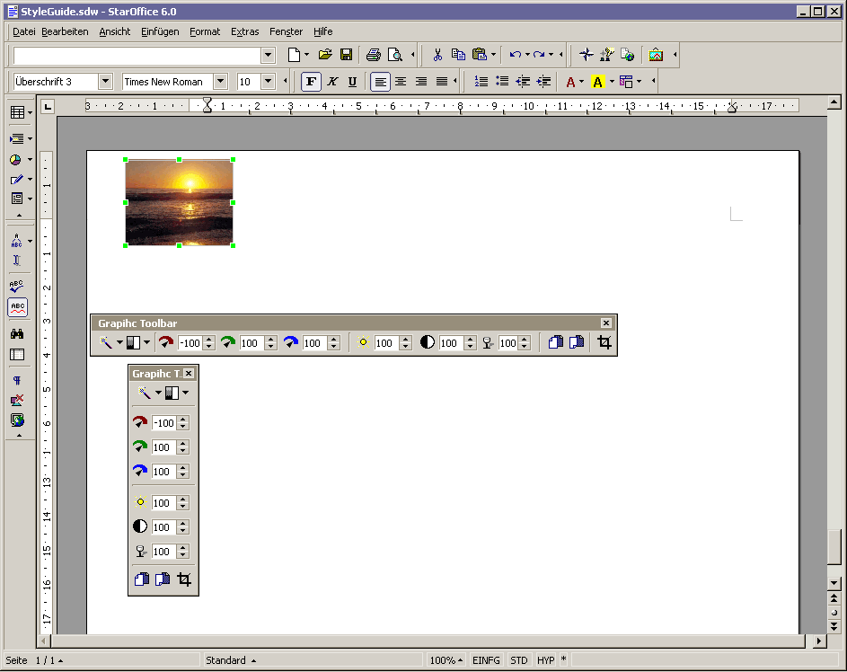